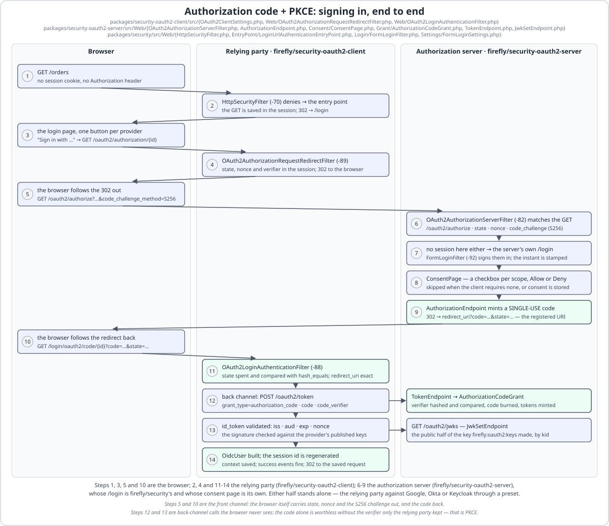

OAuth2 Authorization Server¶
firefly/security-oauth2-server is LaraFly's Spring Authorization Server: an OAuth 2.1 / OpenID Connect 1.0
provider that runs inside the application, on top of firefly/security. Registered clients
(a config map or Eloquent), the authorization-code grant with PKCE and the framework's own consent page, client
credentials, refresh tokens with rotation and reuse detection, RS256/ES256 JWT (or opaque reference) access
tokens, id tokens, JWKS publishing through the security core's JwksDocumentSource — so the same application
can be its own resource server — RFC 8414 / OIDC discovery, RFC 7662 introspection, RFC 7009 revocation, OIDC
userinfo, RP-initiated logout and RFC 7591 dynamic registration. Every key defaults to off; every token is stored
as a hash; every error is the RFC 6749 JSON document or the redirect-with-error.
Run your own IdP in five minutes¶
- A key.
php artisan firefly:oauth2:keyswritesstorage/oauth2/private.pem(RSA 2048;--algorithm=ES256for P-256) with owner-only permissions and prints the setting to use and thekidthe JWKS will publish. Keep the file out of version control; an existing file is never overwritten without--force. - Sign-in. The authorization endpoint needs a session-held user, so turn on the framework's form login (or
session.enabledwith a sign-in mechanism of your own) and a user store:
return [
'security' => [
'enabled' => true,
'form_login' => ['enabled' => true],
'csrf' => ['enabled' => true],
'users' => ['driver' => 'eloquent', 'model' => App\Models\User::class, 'authorities' => ''],
],
];
password_hash() with the {bcrypt} prefix;
{noop} only in development):
return [
'security' => [
// …the keys from step 2…
'oauth2' => [
'server' => [
'enabled' => true,
'jwt' => ['signing_key' => env('FIREFLY_OAUTH2_SERVER_SIGNING_KEY')],
'clients' => [
'web-app' => [
'client_secret' => '{bcrypt}$2y$10$…',
'client_name' => 'The web application',
'authorization_grant_types' => ['authorization_code', 'refresh_token'],
'redirect_uris' => ['https://app.example.com/login/oauth2/code/web-app'],
'scopes' => ['openid', 'profile', 'email'],
],
],
],
],
],
];
JwksDocumentSource the filter reads, so no HTTP self-fetch ever happens:
return [
'security' => [
// …the keys from steps 2 and 3…
'oauth2' => [
// …the server block from step 3…
'resource_server' => [
'enabled' => true,
'jwks_source' => 'local',
'jwks_uri' => env('APP_URL').'/oauth2/jwks',
'issuer' => env('APP_URL'),
'audience' => 'web-app',
],
],
],
];
jwks_source: auto recognises only /.well-known/jwks.json as "own"; the server publishes at
/oauth2/jwks, so say local.) Now a bearer minted by /oauth2/token authenticates on every route
firefly.security.http.rules protects, with SCOPE_* authorities from the token's scope claim.
5. Try it. GET /.well-known/openid-configuration lists the endpoints. A browser sent to
/oauth2/authorize?response_type=code&client_id=web-app&redirect_uri=…&scope=openid+profile&state=…&code_challenge=…&code_challenge_method=S256
meets the login page, then the consent page, then comes back with ?code=…&state=…; the client posts the code,
its redirect_uri, the code_verifier and its Basic credentials to /oauth2/token and receives the access
token, a refresh token and an id token.
Where it sits¶
Every endpoint is answered by one filter, OAuth2AuthorizationServerFilter at #[Order(-82)]: after the
session (-94), the bearer filters (-90/-85) and remember-me (-83) established whatever principal there
is — the authorization endpoint needs it — and before CsrfFilter (-80) and HttpSecurityFilter (-70).
That placement is the whole answer to two questions people ask first: a machine's POST /oauth2/token is never
asked for a session token, and no deny-by-default URL rule can refuse an endpoint — http.rules may end with
* → authenticated and the metadata, the JWKS and the token endpoint still answer, the authorization and
userinfo endpoints check the principal themselves. Nothing needs adding to http.rules or csrf.except
(Spring places its authorization-server filters before the authorization filter for the same reason). The one
browser form the server owns, the consent POST, is checked against the session token by the endpoint itself,
exactly as the login and logout filters check theirs. A request whose path is no endpoint of this server costs
one path comparison and falls through.
A wrong method is 405 + Allow + the JSON document. A machine endpoint's failure — an
OAuth2AuthenticationException — is the RFC 6749 §5.2 document with its status (invalid_client is 401 with
WWW-Authenticate: Basic realm="oauth2" when Basic was tried); anything unexpected is logged and answered
500 server_error, so a browser opening a token URL never sees an HTML page. The authorization endpoint answers
its refusals as RFC 6749 §4.1.2.1 says: an unknown client_id or an unregistered redirect_uri is never
redirected — the resource owner sees the framework's 400 page — and everything after that is
302 {redirect_uri}?error=…&error_description=…&state=….
Endpoints¶
| Path (default) | Method | Answers |
|---|---|---|
/.well-known/openid-configuration, /.well-known/oauth-authorization-server |
GET | One discovery document (OIDC's is a superset of RFC 8414's): every endpoint URL as issuer + path, the grants, the client-authentication methods and the algorithms a private_key_jwt assertion may be signed with, S256, the signing algorithm, registration_endpoint when configured. |
/oauth2/jwks |
GET | The public keys — current first, previous after — Cache-Control: public, max-age=3600. |
/oauth2/authorize |
GET, POST | The authorization endpoint and the consent form (below). |
/oauth2/token |
POST | authorization_code (+ code_verifier), client_credentials, refresh_token; client authentication client_secret_basic (RFC 6749 §2.3.1 form-decoded), client_secret_post, private_key_jwt (RFC 7523 against the client's jwk_set), none (a public client, client_id alone). Credentials are read from the body only — a pair in the query string is refused, because a request URI is logged by every proxy. Cache-Control: no-store. |
/oauth2/introspect |
POST | RFC 7662, confidential client auth; {active:false} for anything unknown, revoked, expired, or a code/id token; token_type_hint is a hint. Any authenticated client may introspect any token (resource servers are clients). |
/oauth2/revoke |
POST | RFC 7009, confidential client auth; a refresh token takes its access token with it; unknown is 200; another client's token is invalid_client. |
/userinfo |
GET, POST | A bearer with openid: the claims of the OidcUserInfoMapper. No bearer → 401 WWW-Authenticate: Bearer; bad bearer → invalid_token; no openid → 403 insufficient_scope; an authorization with no end user (client credentials) → invalid_token, because UserInfo is claims about a person and sub would otherwise be a client id. |
/connect/logout |
GET, POST | RP-initiated logout: id_token_hint (verified; expiry ignored), optional client_id, post_logout_redirect_uri (registered, exact) and state; the session is ended through the security core's LogoutHandler — the same bean LogoutFilter uses — and the browser redirected (or sent to /). |
/connect/register (off) |
POST | RFC 7591 with a bearer carrying client.create; 201 with the metadata and the secret, once. The bearer is single-use: a successful registration invalidates it, so one initial access token registers one client, and a body asking for client.create itself is refused. |

Three of those rows — /oauth2/authorize, /oauth2/token and /oauth2/jwks — are one conversation, and the figure above is that conversation with a relying party drawn beside it. The middle lane happens to be firefly/security-oauth2-client; any RFC 6749 client sees the same right-hand lane. The server's own half is worth reading twice: /oauth2/authorize is a browser endpoint that needs a signed-in resource owner, so it runs this application's own form login and consent page before it mints anything, while /oauth2/token is a back-channel endpoint that authenticates the client and never looks at a session. The ordered list below is the right-hand lane of the figure, in full.
The authorization endpoint, in order¶
client_idandredirect_uri(exact match against the registered list; may be omitted when the client registered exactly one) — refused on the page, never redirected.response_type=codeonly; the client must have theauthorization_codegrant; every requested scope must be registered (noscopeasks for every registered one); PKCE:code_challenge+code_challenge_method=S256wheneverrequire_pkce(server-wide, default on), the client'sclient_settings.require_pkce, or the client's public nature demands it —plainis refused;max_agemust be a number. Each is a redirect withunsupported_response_type,unauthorized_client,invalid_scopeorinvalid_request.- No signed-in user (or
prompt=login, ormax_ageexceeded):login_requiredforprompt=none, otherwise theAuthenticationEntryPoint(the login page with the request saved; for a re-authentication the stored context is cleared and the saved request losesprompt=login, so the return visit proceeds). The principal is the one theSecurityContextRepositoryholds between requests, never whateverSecurityContextHolderhappens to carry at-82: a bearer authenticated by the resource-server filter at-85is not a resource owner and cannot redeem itself for a code. - Consent, when the client requires it and (
prompt=consent, or the storedOAuth2AuthorizationConsentdoes not cover the requested scopes):consent_requiredforprompt=none, otherwise the page — the framework's (ConsentPage, the login page's design, no JavaScript) orconsent.viewhanded the sameConsentPageModelas$consent(title,clientName,clientId,principalName,scopesas{scope, description, approved},state,action,csrfToken), falling back logged at warning like the login view. The pending request rides the session under a randomstate; the POST (_token,state,scope[],action) resumes only what this browser started. Denial isaccess_denied; approval records the consent (merged). - The code: an
OAuth2Authorizationwith the request'sredirect_uri,scope,state, challenge,nonce,auth_time(the session's first authenticated instant, stamped at sign-in throughInteractiveAuthenticationSuccessEvent— a remember-me cookie is a credential, not a sign-in, so it never stamps one and always exceeds amax_age) andsid(the session id), a single-use code (authorization_code.ttl), then302 {redirect_uri}?code=…&state=….
Tokens¶
- Access token —
self_contained(default): a JWT with RFC 9068's claims,iss,sub,aud=[client_id],exp,iat,nbf,jti,scope(space-delimited — whatOAuth2ResourceServerFiltermaps toSCOPE_*) andclient_id; orreference: 32 random bytes, resolved only through introspection and userinfo. - Refresh token — opaque, only for a confidential client with the
refresh_tokengrant. Rotated on every refresh unlessrefresh_token.reuse(or the client'sreuse_refresh_tokens) says otherwise; the previous access token is invalidated; the superseded hash joins a bounded family. Presenting a superseded token is reuse: the whole authorization is revoked and the answer isinvalid_grant. With reuse on, the token the client presented is what it gets back (the server holds no value to echo). - Id token — for
openid:iss,sub,aud,azp,exp,iat,auth_time,nonce(when sent),sid,at_hash. OAuth2TokenCustomizer— bind one and it runs last for both JWTs with aJwtEncodingContext(tokenType,registeredClient,principalName,authorizedScopes,authorizationGrantType, the signed-inAuthenticationwhen there is one,claim()/removeClaim()). The shipped access token carries no authorities; a customizer that wants the resource-server filter to see roles adds therolesclaim:
#[Component]
final class RolesClaimCustomizer implements OAuth2TokenCustomizer
{
public function customize(JwtEncodingContext $context): void
{
if ($context->tokenType === OAuth2TokenType::AccessToken) {
$context->claim('roles', array_map(fn ($a) => $a->getAuthority(), $context->principal?->getAuthorities() ?? []));
}
}
}
code_verifier is compared constant-time; secrets through
PasswordEncoder::matches() with a dummy hash for an unknown client so timing says nothing.
Clients¶
RegisteredClient (Spring's): client_id, client_secret (encoded — {bcrypt}…, {argon2id}…, {noop}…;
a value with no {id} prefix is refused at boot because the encoder would silently never match it),
client_name, client_authentication_methods, authorization_grant_types, redirect_uris (absolute, no
fragment), post_logout_redirect_uris, scopes, client_settings (require_pkce,
require_authorization_consent — default consent.required — and jwk_set for private_key_jwt, held at boot
to the algorithms and key shapes an assertion could actually be verified with),
token_settings (access_token_ttl, access_token_format, refresh_token_ttl, reuse_refresh_tokens,
authorization_code_ttl, id_token_ttl, each defaulting to the server-wide key). A client whose only method is
none is public: it always uses PKCE and never receives a refresh token. Every block is validated at boot, naming
the client, by the one rule set (RegisteredClientFactory::assertConsistent()) every store runs — the config map,
the Eloquent rows as they are read, and a dynamically registered client alike.
clients.driver is memory (the map; driver is its one reserved key) or eloquent
(oauth2_registered_clients). RegisteredClientRepository::save() is what dynamic registration and tests use.
Storage¶
OAuth2AuthorizationService (codes, access/refresh/id tokens by SHA-256 hash, the request attributes, the
refresh-token family) and OAuth2AuthorizationConsentService, each with a memory driver (a per-process map:
tests and a single dev server) and an eloquent driver (oauth2_authorizations, oauth2_authorization_consents,
through the framework's own EloquentRepository, so exception translation and the admin data browser apply).
php artisan vendor:publish --tag=firefly-oauth2-server-migrations publishes the migration; php artisan
migrate runs it either way. With more than one worker use eloquent: a code issued by one process must be
redeemable by another.
The purge (authorizations.purge.enabled, authorizations.purge.cron) is a scheduled task the framework runs
under the DistributedLock named firefly.oauth2.purge, listed by firefly:schedule,
/actuator/scheduledtasks and the admin Scheduled page like any #[Scheduled] method — contributed to the
ScheduledManifest at boot rather than annotated, because the scheduling scanner reads your code, not a
framework package.
Keys¶
jwt.signing_key is a private-key PEM (inline, starting with -----BEGIN) or a path to one; jwt.algorithm is
RS256 (an RSA key) or ES256 (an EC P-256 key) and the key type is checked against it at boot; jwt.key_id
defaults to the RFC 7638 thumbprint, so every node with the same key publishes the same kid. Rotation:
generate a new key, move the old one to jwt.previous_keys ([{key, key_id}]; its public half is enough),
deploy — tokens signed by the old key verify until they expire, the JWKS publishes both, and the resource-server
filter reading the local source sees both. Two published keys under one kid are refused at boot: a verifier
keeps one key per id, so the pair would fail every fresh token at first use.
Boot refusals¶
With enabled on the boot refuses, naming the key: no master flag; no session security (form_login.enabled,
session.enabled or remember_me.enabled); firefly.security.jwt.enabled on (the -90
HMAC filter would reject every token this server issues before /userinfo could examine it — verify your own
tokens with oauth2.resource_server instead); firefly.security.http_basic.enabled on (the -91 Basic filter
answers every Authorization: Basic header it cannot authenticate as a user with its own 401 before the server's
filter at -82 could read a client_secret_basic credential, so every confidential client would be refused as a
bad user login — the server authenticates its clients itself; an application that wants HTTP Basic for its own
API users beside the server needs a path exemption on HttpBasicFilter, which the security package does not offer
yet); an empty or unloadable signing key; a client block that could not authenticate or redirect safely;
oidc_client_registration_endpoint configured over a store that forgets (the memory clients driver is the config
map rebuilt in every process, so a 201 would hand out credentials no later request could authenticate — the rule
is the store this application RESOLVES, so a durable repository of your own is never refused over a driver name its
bean makes meaningless); rate_limit.enabled without firefly/resilience's store.
With OAuth2ResourceServerFilter on in the same application (the recommended setup) a bearer at /userinfo is
examined by that filter first: a valid token passes, an invalid one is that filter's 401 problem document
rather than the endpoint's RFC 6750 challenge.
Actuator and admin¶
/actuator/oauth2clients lists every client with its methods, grants, scopes, redirect URIs, settings and the
number of authorizations alive for it — never a secret; unexposed by default like everything beyond health
and info. PKCE is reported twice, as the client registered it (requireProofKey) and as the endpoints enforce
it (requiresProofKey), and both — with requireAuthorizationConsent — are null for a client that cannot take
the authorization-code path at all. The counts are the authorizations the store this worker resolved holds,
which the payload says in authorizations.processLocal; on the default memory driver that is a per-process map,
so authorizations.driver = eloquent is what makes the numbers describe the deployment. The admin dashboard's
OAuth2 clients page (/firefly/oauth2, group Wiring) renders the endpoint in-process, prints — rather than
0 for a client a process-local store counted nothing for, and is hidden while the endpoint is absent.
Configuration (firefly.security.oauth2.server.*, snake_case)¶
| Key | Default | Meaning |
|---|---|---|
enabled |
false |
The package master. Requires firefly.security.enabled and session security. |
issuer |
app.url |
The iss claim and the base of every published URL. Absolute, no query or fragment. |
authorization_endpoint |
/oauth2/authorize |
Path. |
token_endpoint |
/oauth2/token |
Path. |
jwk_set_endpoint |
/oauth2/jwks |
Path. |
token_introspection_endpoint |
/oauth2/introspect |
Path. |
token_revocation_endpoint |
/oauth2/revoke |
Path. |
oidc_user_info_endpoint |
/userinfo |
Path. |
oidc_logout_endpoint |
/connect/logout |
Path. |
oidc_client_registration_endpoint |
'' |
RFC 7591 registration; off while empty (/connect/register is Spring's path). Needs a clients store that outlives the request. |
jwt.signing_key |
'' |
The private key, PEM or path; required once enabled (php artisan firefly:oauth2:keys). |
jwt.key_id |
'' |
The kid; the RFC 7638 thumbprint when empty. |
jwt.algorithm |
RS256 |
RS256 or ES256. |
jwt.previous_keys |
[] |
[{key, key_id}] still published for verification after a rotation. |
access_token.format |
self_contained |
self_contained (JWT) or reference (opaque). |
access_token.ttl |
300 |
Seconds. |
refresh_token.ttl |
3600 |
Seconds. |
refresh_token.reuse |
false |
false rotates and detects reuse. |
authorization_code.ttl |
300 |
Seconds. |
id_token.ttl |
1800 |
Seconds. |
require_pkce |
true |
PKCE for every authorization_code request (OAuth 2.1). |
require_proof_key_for_public_clients |
true |
PKCE for a client that lists none beside a confidential method even when require_pkce is off; a purely public client always needs it. |
consent.required |
true |
The default for a client's client_settings.require_authorization_consent. |
consent.view |
'' |
A Blade view replacing the framework consent page; receives $consent (ConsentPageModel); falls back, logged at warning. |
clients.driver |
memory |
memory (the map below) or eloquent. |
clients.{id}.* |
— | client_id (default the key), client_secret, client_name, client_authentication_methods ([client_secret_basic]), authorization_grant_types ([authorization_code, refresh_token]), redirect_uris, post_logout_redirect_uris, scopes, client_settings, token_settings. |
authorizations.driver |
memory |
memory or eloquent. |
authorizations.purge.enabled |
false |
The scheduled purge of expired authorizations. |
authorizations.purge.cron |
*/15 * * * * |
Its cron expression. |
rate_limit.enabled |
false |
A token bucket per client id (else IP) at the token endpoint, over firefly/resilience's store; 429 temporarily_unavailable + Retry-After. |
rate_limit.max_tokens |
60 |
The burst. |
rate_limit.refill_rate |
1.0 |
Tokens per second. |
Testing¶
Firefly\Testing\Security\OAuth2\OAuth2ServerTestClient drives the application's own server through Laravel's
test client from any FireflyTestCase. Sign the user in through the login page and carry the session cookie
— actingAsPrincipal() is not enough at the authorization endpoint and is not meant to be: it establishes a
principal in SecurityContextHolder for one request, while the endpoint demands the principal the
SecurityContextRepository holds between requests, so that no bearer and no test double can be a resource
owner without a session behind it. The machine helpers (token, introspection, revocation, userinfo) need no
sign-in at all.
$oauth2 = new OAuth2ServerTestClient($this);
$code = $oauth2->obtainCode('web-app', 'https://app.test/cb', 'openid profile'); // authorize, consent if shown, the code off Location
$tokens = $oauth2->exchangeCode('web-app', $code, 'https://app.test/cb', 'the-secret')->json();
$oauth2->introspect('svc', 'svc-secret', $tokens['access_token'])->assertJson(['active' => true]);
$oauth2->refresh('web-app', $tokens['refresh_token'], 'the-secret');
$oauth2->userInfo($tokens['access_token'])->assertJson(['sub' => 'ada']);
authorize() sends a fresh PKCE pair and state each time (proofKey(), state()); approveConsent() posts
the page; clientCredentials(), revoke(), tokens() and token() cover the rest. The package's own suites are
the reference: packages/security-oauth2-server/tests/Support/OAuth2ServerCapstoneTestCase.php boots the real
providers with a file session driver, memory users and three clients (web-app confidential with consent,
public-spa public with PKCE, svc for client credentials), and every flow — login page, consent,
code, tokens, the resource-server filter on /api/profile, refresh and reuse, introspection, revocation,
userinfo, logout, registration, every refusal, the Eloquent drivers on sqlite, the admin page — runs through
the real pipeline; tests/Browser/OAuth2AuthorizationCodeTest.php drives it in Chromium.
Laravel comparison¶
| Concern | Plain Laravel | LaraFly |
|---|---|---|
| Issuing tokens | Passport (League OAuth2) or Sanctum's personal tokens | one package on the security core's session, login page, entry point and PasswordEncoder; Spring Authorization Server's model |
| Clients | the oauth_clients table + artisan commands |
a config map validated at boot, or Eloquent, behind one RegisteredClientRepository |
| Consent | Passport's Vue/Blade authorize view | the framework's consent page, or consent.view with the same model |
| Verifying your own tokens | Passport's auth:api guard |
OAuth2ResourceServerFilter over the local JwksDocumentSource — the same filter any other resource server uses |
| Discovery, introspection, revocation, userinfo, logout, registration | partial (Passport has no discovery, introspection or OIDC) | RFC 8414, 7662, 7009, OIDC Core, RP-Initiated Logout, RFC 7591 |
| Testing | Passport::actingAs() |
OAuth2ServerTestClient over a real sign-in; a Chromium round trip in the browser suite |
Known-latent¶
The jti of a private_key_jwt assertion is not tracked (an assertion may be replayed until it expires — keep
exp short). private_key_jwt clients are registered through configuration or the Eloquent table only (dynamic
registration answers invalid_client_metadata for the method, having no key set to register). The consent page
offers the requested scopes as boxes to clear but does not describe scopes beyond openid/profile/email
(ConsentPage::describe()); an application with a scope catalogue binds consent.view. Introspection is open to
every authenticated confidential client (Spring's rule); a deployment that wants per-client audiences enforces
aud at the resource server. The purge deletes by the latest token expiry, so a revoked authorization lives until
that instant. The server cannot share an application with http_basic.enabled (the boot refuses the pair):
HttpBasicFilter has no path exemption, so HTTP Basic for the application's own API users beside the server waits
for a firefly.security.http_basic.except list in the security package. Device authorization, token exchange
(RFC 8693) and back-channel logout are not implemented.